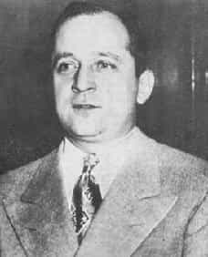

< < < Back
5 Modern Day Social Justice Warriors Who Would Have Been Institutionalized In The Past – Return Of Kings
Social justice warriors are known for their angry, morally righteous proclamations on the evils of modern society. Prominent SJWs such as Anita Sarkeesian, Laurie Penny and John Scalzi rail against the injustices that our supposedly patriarchal, racist, homophobic world inflicts on women and people of color. However, given how ludicrous and out of touch their ideas are, has anyone wondered if SJWs simply aren’t right in the head?
In the past, anyone who made the kinds of statements spat forth by prominent SJWs would have been condemned to an insane asylum. Here are five prominent SJWs and how they compare to famous institutionalized writers and ideologues of the past.
1. Jessica Valenti
Best known as the founder of the once-prominent feminist blog Feministing, Jessica Valenti currently works as a staff columnist for The Guardian. Valenti has argued that virginity is a social construct in her book The Purity Myth, declared that women who claim to be rape victims should be automatically believed despite the evidence, and has advocated for rape trials returning to standards of proof that were abandoned in the Middle Ages.
Similar To: Virginia Woolf
A prominent feminist of the early 20th century, Virginia Woolf’s meandering, onanistic fiction was a considerable influence on modernist and postmodernist writers. Her most famous feminist work is the essay “A Room of One’s Own,” which was satirized by the South African poet Roy Campbell in his poem “On the Same”:
Far from the Vulgar haunts of men,
Each sits in her successful room.
Housekeeping with her fountain pen,
and writing novels with her broom.
Woolf suffered from bipolar disorder and was repeatedly institutionalized due to the nervous breakdowns she suffered over the course of her life. Starting with the death of her mother when she was 15, she underwent periodic mental breakdowns that were preceded by violent migraines and insomnia, which left their mark on her writing. Woolf eventually committed suicide by drowning in 1941.
2. Jian Ghomeshi
The former host of CBC Radio’s arts program Q, Jian Ghomeshi is an outspoken feminist who once said that he “believe[d] that the world would be a better place if it were run by women.” Last year, Ghomeshi was fired by CBC Radio after several women came forward with allegations that he beat and raped them. While Ghomeshi attempted to defend himself by claiming that his abuse was actually consensual BDSM, 15 separate women have since claimed that he never once obtained consent from them.
Similar To: The Marquis de Sade
The Marquis de Sade was one of the most prominent writers of the French Revolution; his books on sexual perversion and degeneracy are so legendary that the term “sadism,” the tendency to derive pleasure from inflicting pain on others, takes its name from him. He was also one of the most vehement feminists of his era, seeking to liberate women from patriarchal mores so they could better serve his depraved lusts. Sade spent over 30 years of his life in insane asylums and eventually died in prison after Napoleon ordered his arrest.
3. Elizabeth Stoker Bruenig
A soi-disant Christian socialist and contributor to The New Republic, Stoker Bruenig has a long history of bizarre outbursts. Following the implosion of Rolling Stone’s discredited article “A Rape on Campus,” about a violent gang rape that occurred at the University of Virginia, Stoker Bruenig argued that the reason the piece failed was because “it used rightwing tactics to make a leftist point.” She also accused ROK publisher Roosh Valizadeh of making rape threats against her after he asked his Twitter followers to gauge her attractiveness.
Similar To: Sylvia Plath
A darling of English professors and anthology editors, Sylvia Plath was a mentally unstable poet who penned doggerel about how her daddy didn’t give her enough hugs when she was growing up. She spent much of her life in mental institutions due to chronic depression; after receiving electroshock therapy in 1953, she attempted suicide by overdosing on sleeping pills. Plath would finally succeed in taking her own life in 1963, leaving her husband and children behind.
4. Hugo Schwyzer
For over a decade, Hugo Schwyzer was one of feminism’s most prominent male voices, writing for major publications such as The Atlantic and Jezebel, teaching community college courses on the subject, and even leading L.A.’s SlutWalk in 2011. Schwyzer took extremist stances even by the standards of male feminists, including advocating that men allow their girlfriends to penetrate them with strap-ons, getting circumcised in his mid-30’s as a gift to his then-wife, and claiming that men should not date women younger than themselves.
In 2013, following revelations that he had been cheating on his wife with a porn star, Schwyzer had a widely-publicized mental breakdown and suicide attempt. In a manic, narcissistic Twitter rant, he revealed that he had falsified his credentials as a feminist professor, engaged in affairs with his female students, and more.
This was especially shocking considering that Schwyzer had built his reputation on being a “reformed bad boy,” who used to sleep with his students, abuse drugs and alcohol, and attempted to murder his ex-girlfriend.
Similar To: Bill Wilson
Bill Wilson, aka Bill W., co-founded Alcoholics Anonymous in 1935 after being repeatedly institutionalized due to his drinking. His inspiration for founding AA came from a “vision” of God he had while on belladonna, an extremely powerful hallucinogen that was used as a quack cure for alcoholism up until a few decades ago. While never formerly diagnosed, Wilson’s grandiose personality and self-aggrandizing behavior fits the definition of Narcissistic Personality Disorder.
Despite being a Christian and a vocal advocate for temperance, Wilson was a serial adulterer known for coercing young women who joined AA into sexual relationships, a practice now known as “13th stepping.” Yet, while he was busy taking advantage of attractive girls who were recovering from alcoholism, Wilson remained unemployed throughout his life and depended on his wife Lois to pay the bills with her day job.
Additionally, despite the purported success of AA in helping drunks sober up, Wilson repeatedly relapsed throughout his life and even begged for whiskey on his deathbed. The inability of the Twelve Steps to cure even the man who thought them up is borne out in AA’s horrifically high failure rates. According to scientific studies, 90 to 95 percent of alcoholics who join AA end up relapsing within six months, and AA may in fact be worse for alcoholics then doing nothing at all.
5. David Futrelle
David Futrelle is a freelance writer from Chicago who has achieved minor notoriety for his anti-anti-feminist blog Manboobz, renamed We Hunted the Mammoth after male feminist Elliot Rodger went on a shooting spree last year. On his blog, Futrelle frequently cherry-picks quotes from trolls in an attempt to smear anti-feminists and MRAs, citing them as examples of what sites like ROK actually advocate.
While Futrelle’s site is frequently mined for reference material by larger publications, he has yet to achieve the big breakthrough he’s been hoping for.
Despite his current advocacy for feminism, Futrelle has a hidden history as a men’s rights sympathizer. A decade ago, he wrote a letter to the Chicago Reader in which he supported the opening of a Borders bookstore in his neighborhood of Andersonville because the only other bookstore was a womens’ one. He also described himself as a “lapsed feminist.”
Similar To: Matt Cvetic

Matt Cvetic was an FBI informant who achieved minor notoriety in the 1940’s after he infiltrated the Communist Party of the USA and wrote about his experiences in the Saturday Evening Post, later testifying before the House Un-American Activities Committee (HUAC). His tales of life in the party were dramatized in the radio serial I Was a Communist for the FBI, which was later adapted for film in 1951.
Despite his fame, Cvetic’s testimony was eventually discredited after it was revealed that he was an alcoholic who frequently falsified stories. After being institutionalized due to a nervous breakdown in the late 1950’s, Cvetic died of a drinking-induced heart attack in 1962.
As you can see, the loudest and most prominent SJWs of today exhibit obvious signs of mental illness and substance abuse. While suffering nervous breakdowns or becoming addicted to alcohol don’t inherently make someone evil, those who lack the capacity to manage their own lives have no business telling anyone else how to live theirs. Social justice warriors’ moral crusades are the byproducts of their defective minds.
Read More: Modern Social Justice Warriors Use The Same Subversion Strategies As The USSR


![believe[d] that the world would be a better place if it were run by women](http://i.imgur.com/0roa6vt.png){kind=link}